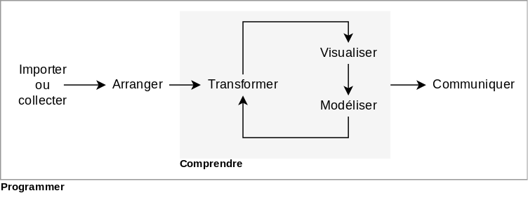
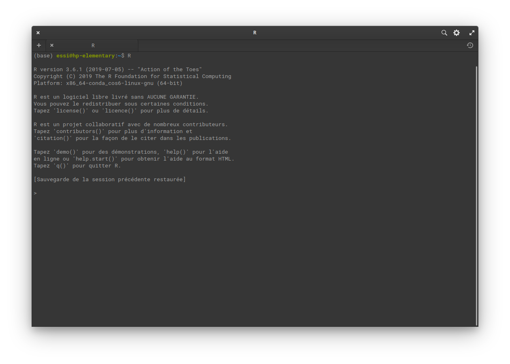
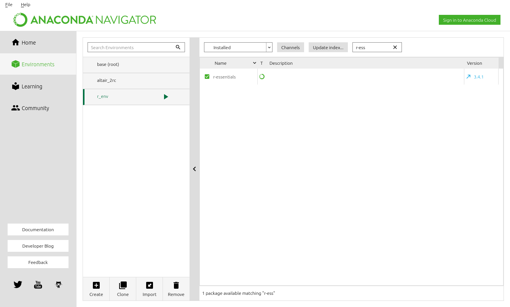
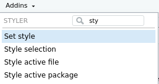

2 La science des données avec R
Objectifs spécifiques:
À la fin de ce chapitre, vous
- saurez contextualiser la science des données par rapport aux statistiques,
- serez en mesure de vous lancer dans un environnement de programmation R,
- serez en mesure d’effectuer des opérations de base en R,
- saurez différencier les grands types d’objets de R et
- saurez installer et charger des modules complémentaire.
Un projet en science des données comprend trois grandes étapes. D’abord, vous devez collecter des données et les compiler adéquatement. Cela peut consister à télécharger des données existantes, exécuter un dispositif expérimental ou effectuer une recensement (étude observationnelle). Compiler les données dans un format qui puisse être importé est une tâche souvent longue et fastidieuse. Puis, vous investiguez les données collectées, c’est-à-dire que vous les visualisez, vous appliquez des modèles et testez des hypothèses. Enfin, la communication des résultats consiste à présenter les connaissances qui émergent de votre analyse sous forme visuelle et narrative, avec un langage adapté à la personne qui vous écoute, qu’elle soit experte ou novice, réviseure de revue savante ou gestionnaire Grolemund et Wickham (2023) propose la structure d’analyse de la Figure 2.1, avec de légères modifications de ma part.
Le grand cadre spécifie Programmer. Oui, vous aurez besoin d’écrire du code. Mais comme je l’ai indiqué dans le premier chapitre, ceci n’est pas un cours de programmation et je préférerai les approches intuitives.
2.1 Statistiques ou science des données?
Selon Whitlock et Schluter (2015), la statistique est l’étude des méthodes pour décrire et mesurer des aspects de la nature à partir d’échantillon. Pour Grolemund et Wickham (2023), la science des données est une discipline excitante permettant de transformer des données brutes en compréhension, perspectives et connaissances. Oui, excitante! La différence entre les deux champs d’expertise est subtile, et certaines personnes n’y voient qu’une différence de ton.
Data Science is statistics on a Mac.
— Big Data Borat (@BigDataBorat) 27 août 2013
Confinées à ses applications traditionnelles, les statistiques sont davantage vouées à la définition de dispositifs expérimentaux et à l’exécution de tests d’hypothèses, alors que la science des données est moins linéaire, en particulier dans sa phase d’analyse, où de nouvelles questions (donc de nouvelles hypothèses) peuvent être posées au fur et à mesure de l’analyse. Cela arrive généralement davantage lorsque l’on fait face à de nombreuses observations sur lesquelles de nombreux paramètres sont mesurés.
La quantité de données et de mesures auxquelles nous avons aujourd’hui accès grâce aux technologies de mesure et de stockage relativement peu dispendieux rend la science des données une discipline particulièrement attrayante, pour ne pas dire sexy.
2.2 Débuter en R
R est un langage de programmation dérivé du langage S, qui fut initialement lancé en 1976.
R figure parmi les langages de programmation les plus utilisés au monde. Bien qu’il soit basé sur les langages statiques C et Fortran, R est un langage dynamique, c’est-à-dire que le code peut être exécuté ligne par ligne ou bloc par bloc: un avantage majeur pour des activités qui nécessitent des interactions fréquentes. Bien que R soit surtout utilisé pour le calcul statistique, il s’impose de plus en plus comme outil privilégié en sciences des données en raison des récents développements de modules d’analyse, de modélisation et de visualisation, dont plusieurs seront utilisés dans ce manuel.
Un langage de programmation s’apprend un peu comme une langue. Au début, un code R peut sembler incompréhensible. Et face à son clavier, on ne sait pas trop comment exprimer ce que l’on désire. Au fur et à mesure de l’apprentissage, les symboles, les fonctions et le style deviennent de plus en plus familiers et on apprend tranquillement à traduire en code ce que l’on désire effectuer. Comme une langue s’apprend en la parlant dans la vie de tous les jours, un language de programmation s’apprend avantageusement en solutionnant vos propres problèmes (Figure 2.3).

2.3 Préparer son flux de travail
Il existe de nombreuses manières d’utiliser R. Parmi celles-ci, j’en couvrirai 3:
- Installation classique (installation suggérée)
- Installation avec Anaconda
- Utilisation infonuagique
2.3.1 Installation classique
Installation suggérée. Sur Windows ou Mac, dirigez-vous ici, téléchargez et installez. Sur Linux, ouvrez votre gestionnaire d’application, chercher r-base (Ubuntu, Debian), R-base (openSuse) ou R-core (Fedora) et installez-le (assurez-vous que les librairies suivantes sont aussi installées: gcc, gcc-fortran, gcc-c++ et make), vous aurez peut-être besoin d’installer des librairies supplémentaires pour faire fonctionner certains modules.
Note. Les modules présentés dans ce cours devraient être disponibles sur Linux, Windows et Mac. Ce n’est pas le cas pour tous les modules R. La plupart fonctionnent néanmoins sur Linux, dont les systèmes d’opération (je recommande Ubuntu ou l’une de ses dérivées comme elementary OS) sont de bonnes options pour le calcul scientifique.
À cette étape, R devrait fonctionner dans un interpréteur de commande . Si vous lancez R dans un terminal (chercher cmd dans le menu si vous êtes sur Windows), vous obtiendrez quelque chose comme ceci.

Le symbole > indique que R attend que vos instructions. Vous voilà dans un état méditatif devant l’indéchiffrable vide du terminal 😵. Ne vous en faites pas: nous commencerons bientôt à jaser avec R.
Avant cela, installons-nous au salon. Afin de travailler dans un environnement de travail plus confortable, je recommande l’installation de l’interface RStudio, gratuite et open source: téléchargez l’installateur et suivez les instructions. RStudio ressemble à ceci.

En haut à droite se trouve un menu Project (None). Il s’agit d’un menu de vos projets. Je recommande d’utiliser ces projets avec RStudio, qui vous permettront de mieux gérer vos sessions de travail, en particulier en lien avec les chemins vers vos données, graphiques, etc., que vous pouvez gérer relativement à l’emplacement de votre dossier de projet plutôt qu’à l’emplacement des fichiers sur votre machine: nous verrons plus en détails au chapitre 5.
- En haut à gauche, vous avez vos feuilles de calcul, qui apparaîtront en tant qu’onglets. Une feuille de calcul R script est une série de commandes que vous lancez en séquence. Il peut aussi s’agir d’un document Quarto si vous choisissez de travailler ainsi. Ce format vous permettra de d’écrire du texte en format Markdown entre des blocs de code. Il est question du format Quarto au chapitre 5).
- En bas à gauche apparaît la Console, où vous voyez les commandes envoyées à R ainsi que ses sorties.
- En haut à droite, les différents onglets indiquent où vous en êtes dans vos calculs. En particulier, la liste sous Environment indique les objets qui ont été générés ou chargés jusqu’alors.
- En bas à droite, on retrouve des onglets de nature variés. Files contient les sous-dossiers et fichiers du dossier de projets. Plots est l’endroit où apparaîtront vos graphiques. Packages contient la liste des modules déjà installés, ainsi qu’un outil de gestion des modules pour leur installation, leur désinstallation et leur mise à jour. Help affiche les fiches d’aide des fonctions (pour obtenir de l’aide sur une fonction dans RStudio, surlignez la fonction dans votre feuille de calcul, puis appuyez sur
F1). Enfin, l’onglet Viewer affichera les sorties HTML, en particulier les graphiques interactifs que vous générerez par exemple avec le moduleplotly, ou alors le rendu de votre fichier Quarto. Si votre environnement de travail était un avion, R serait le moteur et RStudio serait le cockpit!

2.3.2 Installation avec Anaconda
Si vous cherchez une trousse complète d’analyse de données, comprenant R et Python, vous pourrez préférer Anaconda. Une fois installée, vous pourrez isoler un environnement de travail sur R, ou même isoler des environnements de travail particuliers pour vos projets. Une manière conviviale de créer des environnements de travail est de passer par l’interface Anaconda navigator, que vous lancerez soit dans le menu Windows, soit en ligne de commande anaconda-navigator sous Mac et Linux, puis d’installer r-essentials, rstudio et jupyterlab dans l’onglet Environment. Vous pourrez aussi installer RStudio et Jupyter lab via l’onglet Home de Anaconda navigator. Dans l’environnement de base, installez le package nb_conda_kernels pour vous assurer que tous les noyaux (R, Python, etc.) installés dans les environnements de travail soient automatiquement accessibles dans Jupyter. Si vous désirez utiliser dans Jupyter la version de R installée avec l’installation classique, référez-vous au guide présenté en extra au bas de la page.

Jupyter lab est une interface notebook semblable à Quarto - les format Jupyter (*.ipynb) et Quarto (*.qmd) sont par ailleurs convertibles grâce au module jupytext. L’utilisation de R en Anaconda n’est pas tout à fait au point, et pourrait poser problème pour l’installation de certains modules. Si vous optez pour cette option, préparez-vous à avoir à bidouiller un peu. Plusieurs préfèrent Jupyter à RStudio (ce n’est pas mon cas).
2.3.3 Utilisation infonuagique
Pas besoin d’avoir une machine super puissante pour travailler en R. Il existe une multitude de services infonuagiques (dans le cloud) vous permettant de lancer vos calculs sur des serveurs plutôt que sur votre Chromebook ou votre vieux laptop déglingué. Certains services sont gratuits, et d’autres souvent plus élaborés sont payants. Vous pouvez utiliser gratuitement Azure Notebooks ou un tour de passe-passe pour faire fonctionner Google colab en R. Une option gratuite de CoCalc vient avec un agressant bandeau rouge vif qui disparait avec l’option payante.
À mon avis, le service Nextjournal est celui d’entre tous qui possède en ce moment les meilleures qualités dans sa version gratuite. Vous pourrez y travailler en mode collaboratif, comme dans Google docs. En outre, vous pouvez lancer ces notes de cours en les important dans Nextjournal. Vous devrez toutefois déposer les données dans l’interface, puis à chaque session installer les modules spécialisés. Le service gratuit offre peu de puissance de calcul, mais pour effectuer les applications de base, ça devrait être suffisant. La vidéo ci-dessous monter comment importer les notes de cours dans Nextjournal.
2.4 Premiers pas avec R
R ne fonctionne pas avec des menus, en faisant danser une souris sous une musique de clics. Vous devrez donc entrer des commandes avec votre clavier, que vous apprendrez par cœur au fur et à mesure, ou que vous retrouverez en lançant des recherches sur internet. Par expérience personnelle, lorsque je travaille avec R, j’ai toujours un navigateur ouvert prêt à recevoir une question.
Les étapes qui suivent sont des premiers pas. Elles ne feront pas de vous des ceintures noires de la programmation. La plupart des utilisateurs de R ont appris en se pratiquant sur leurs données, en se butant sur des obstacles, en apprenant comment les surmonter ou les contourner…
Pour l’instant, ouvrez seulement un interpréteur de commande, et lancez R. Voyons si R est aussi libre qu’on le prétend.
“La liberté, c’est la liberté de dire que deux et deux font quatre. Si cela est accordé, tout le reste suit.” - George Orwell, 1984
2 + 2[1] 4Et voilà.
Les opérations mathématiques sont effectuées telles que l’on devrait s’attendre.
67.1 - 43.3[1] 23.82 * 4[1] 81 / 2[1] 0.5L’exposant peut être noté ^, comme c’est le cas dans Excel, ou ** comme c’est le cas en Python.
2^4[1] 162**4[1] 161 / 2 # utilisez des espaces de part et d'autre des opérateurs (sauf pour l'exposant) pour éclaircir le code[1] 0.5R ne lit pas ce qui suit le caractère #. Cela vous laisse l’opportunité de commenter un code comprenant une séquence de plusieurs lignes. Remarquez également que la dernière opération comporte des espaces entre les nombres et l’opérateur /. Dans ce cas (ce n’est pas toujours le cas), les espaces ne signifient rien: ils aident seulement à éclaircir le code. Il existe des guides pour l’écriture de code en R. Je recommande fortement de suivre méticuleusement le guide de style de tidyverse.
Assigner des objets à des variables est fondamental en programmation. En R, on assigne traditionnellement avec la flèche <-, mais vous verrez parfois le =, qui est davantage utilisé comme standard dans d’autres langages de programmation. Par exemple.
a <- 3Truc. Essayez d’inverser la flèche, e.g. 3 -> a.
Techniquement, a pointe vers le nombre entier 3. Conséquemment, on peut effectuer des opérations sur a.
a * 6[1] 18A + 2Le message d’erreur nous dit que A n’est pas défini. Sa version minuscule, a, l’est pourtant. La raison est que R considère la case dans la définition des objets. Utiliser la mauvaise case mène donc à des erreurs.
Note. Les messages d’erreur ne sont pas toujours clairs, mais vous apprendrez à les comprendre. Dans tous les cas, ils sont fait pour vous aider. Lisez-les attentivement!
En général, le nom d’une variable doit toujours commencer par une lettre, et ne doit pas contenir de caractères réservés (espaces, +, *). Dans la définition des variables, plusieurs utilisent des symboles . pour délimiter les mots, mais la barre de soulignement _ est à préférer. En effet, dans d’autres langages de programmation comme Python, le . a une autre signification: son utilisation est à éviter autant que possible. De même, évitez l’utilisation de majuscules pour nommer vos objets (voir le guide de style de tidyverse pour nommer les objets).
Note. À ce stade, vous serez probablement plus à l’aise de copier-coller ces commandes dans votre terminal.
rendement_arbre <- 50 # pomme/arbre
nombre_arbre <- 300 # arbre
nombre_pomme <- rendement_arbre * nombre_arbre
nombre_pomme[1] 15000Comme chez la plupart des langages de programmation, R respecte les conventions des priorités des opérations mathéatiques.
10 - 9^0.5 * 2[1] 42.4.1 Types de données
Jusqu’à maintenant, nous n’avons utilisé que des nombres entiers (integer ou int) et des nombres réels (numeric ou float64). R inclut d’autres types. La chaîne de caractère (string ou character) contient un ou plusieurs symboles. Elle est définie entre des doubles guillemets " " ou des apostrophes ' '. Il n’existe pas de standard sur l’utilisation de l’un ou de l’autre, mais en règle générale, on utilise les apostrophes pour les expressions courtes, contenant un simple mot ou une séquence de lettres, et les guillemets pour les phrases. Une raison pour cela: les guillemets sont utiles pour insérer des apostrophes dans une chaîne de caractère.
a <- "L'ours"
b <- "polaire"
paste(a, b)[1] "L'ours polaire"On colle a et b avec la fonction paste. Notez que l’objet a a été défini précédemment. Il est possible en R de réassigner une variable, mais cela peut porter à confusion, jusqu’à générer des erreurs de calcul si une variable n’est pas assignée à l’objet auquel on voulait référer.
Combien de caractères contient la chaîne "L'ours polaire"? R sait compter. Demandons-lui.
Quatorze, c’est bien cela (comptez “L’ours polaire”, en incluant l’espace). Comme paste, nchar est une fonction incluse par défaut dans l’environnement de travail de R: plus précisément, ces fonctions sont incluses dans le module base, inclut par défaut lorsque R est lancé. La fonction est appelée en écrivant nchar(). Mais une fonction de quoi? Des arguments, qui se trouvent entre les parenthèses. Dans ce cas, il y a un seul argument: c.
En calcul scientifique, il est courant de lancer des requêtes déterminant si un résultat est vrai ou faux.
a <- 17
a < 10[1] FALSEa > 10[1] TRUEa == 10[1] FALSEa != 10[1] TRUEa == 17[1] TRUE!(a == 17)[1] FALSEJe viens d’introduire un nouveau type de donnée: les données booléennes (boolean, ou logical), qui ne peuvent prendre que deux états - TRUE ou FALSE. En même temps, j’ai utilisé la fonction print parce que dans mon carnet, seule la dernière opération permet d’afficher le résultat. Si l’on veut forcer une sortie, on utilise print. Puis, on a vu plus haut que le symbole = est réservé pour assigner des objets: pour les tests d’égalité, on utilise le double égal, ==, ou != pour la non-égalité. Enfin, pour inverser une donnée de type booléenne, on utilise le point d’exclamation !.
2.4.2 Les collections de données
Les exercices précédents ont permis de présenter les types de données offerts par défaut sur R qui sont les plus importants pour le calcul scientifique: int (integer, ou nombre entier), numeric (nombre réel), character (string, ou chaîne de caractère) et logical (booléen). D’autres s’ajouteront tout au long du cours, comme les catégories (factor) et les unités de temps (date-heure).
Lorsque l’on procède à des opérations de calcul en science, nous utilisons rarement des valeurs uniques. Nous préférons les organiser et les traiter en collections. Par défaut, R offre quatre types importants de collections: les vecteurs, les matrices, les listes et les tableaux.
2.4.2.1 Vecteurs
D’abord, les vecteurs sont une série de variables de même type. Un vecteur est délimité par la fonction c( ) (c pour concaténation). Les éléments de la liste sont séparés par des virgules.
espece <- c("Petromyzon marinus", "Lepisosteus osseus", "Amia calva", "Hiodon tergisus")
espece[1] "Petromyzon marinus" "Lepisosteus osseus" "Amia calva"
[4] "Hiodon tergisus" Pour accéder aux éléments d’une liste, one appelle la liste suivie de la position de l’objet désiré entre crochets.
espece[1][1] "Petromyzon marinus"espece[2][1] "Lepisosteus osseus"espece[1:3][1] "Petromyzon marinus" "Lepisosteus osseus" "Amia calva" espece[c(1, 3)][1] "Petromyzon marinus" "Amia calva" On peut noter que le premier élément de la liste est noté 1, et non 0 comme c’est le cas de la plupart de langages. Le raccourcis 1:3 crée une liste de nombres entiers de 1 à 3 inclusivement, c’est-à-dire l’équivalent de c(1, 2, 3). En effet, on crée une liste d’indices pour soutirer des éléments d’une liste. On peut utiliser le symbole de soustraction pour retirer un ou plusieurs éléments d’un vecteur.
espece[-c(1, 3)][1] "Lepisosteus osseus" "Hiodon tergisus" Pour ajouter un élément à notre liste, on peut utiliser la fonction c( ).
espece <- c(espece, "Cyprinus carpio")
espece[1] "Petromyzon marinus" "Lepisosteus osseus" "Amia calva"
[4] "Hiodon tergisus" "Cyprinus carpio" Notez que l’on efface l’objet espece par une concaténation de l’objet espece, précédemment définie, et d’un autre élément.
En lançant espece[3] <- "Lepomis gibbosus", il est possible de changer un élément de la liste.
espece[3] <- "Lepomis gibbosus"
espece[1] "Petromyzon marinus" "Lepisosteus osseus" "Lepomis gibbosus"
[4] "Hiodon tergisus" "Cyprinus carpio" 2.4.2.2 Matrices
Une matrice est un vecteur de dimension plus élevée que 1. En écologie, on dépasse rarement la deuxième dimension, quoi que les matrices en N dimensions soient courantes en modélisation mathématique. Je ne considérerai pour le moment que des matrices 2D. Comme c’est la cas des vecteurs, les matrices contiennent des valeurs de même type. En R, on peut attribuer aux matrices 2D des noms de ligne et de colonne.
[,1] [,2] [,3]
[1,] 1 5 9
[2,] 2 6 10
[3,] 3 7 11
[4,] 4 8 12 A B C
site_1 1 5 9
site_2 2 6 10
site_3 3 7 11
site_4 4 8 12On peut soutirer les noms de colonne et les noms de ligne. Le résultat est un vecteur.
2.4.2.3 Listes
Les listes sont des collections hétérogènes dans lesquelles on peut placer les objets désirés, sans distinction: elles peuvent même inclure d’autres listes. Chacun des éléments de la liste peut être identifié par une clé.
ma_liste <- list(
especes = c(
"Petromyzon marinus", "Lepisosteus osseus",
"Amia calva", "Hiodon tergisus"
),
site = "A101",
stations_meteos = c("746583", "783786", "856363")
)
ma_liste$especes
[1] "Petromyzon marinus" "Lepisosteus osseus" "Amia calva"
[4] "Hiodon tergisus"
$site
[1] "A101"
$stations_meteos
[1] "746583" "783786" "856363"Les éléments de la liste peuvent être soutirés par le nom de la clé ou par l’indice, de cette manière.
ma_liste$especes[1] "Petromyzon marinus" "Lepisosteus osseus" "Amia calva"
[4] "Hiodon tergisus" ma_liste[[1]][1] "Petromyzon marinus" "Lepisosteus osseus" "Amia calva"
[4] "Hiodon tergisus" Exercice. Accéder au deuxième élément du vecteur d’espèces dans la liste ma_liste.
2.4.2.4 Tableaux
Enfin, le type de collection de données le plus important est le tableau, ou data.frame. Techniquement, il s’agit d’une liste composée de vecteurs de même longueur. Chaque colonne peut ainsi prendre un type de donnée indépendamment des autres colonnes.
tableau <- data.frame(
espece = c(
"Petromyzon marinus", "Lepisosteus osseus",
"Amia calva", "Hiodon tergisus"
),
poids = c(10, 13, 21, 4),
longueur = c(35, 44, 50, 8)
)
tableau espece poids longueur
1 Petromyzon marinus 10 35
2 Lepisosteus osseus 13 44
3 Amia calva 21 50
4 Hiodon tergisus 4 8En programmation classique en R (nous verrons plus loin la méthode tidyverse), les éléments d’un tableau se manipulent comme ceux d’une matrice et les colonnes peuvent être appelés comme les éléments d’une liste.
tableau[, 2:3] poids longueur
1 10 35
2 13 44
3 21 50
4 4 8tableau$poids[1] 10 13 21 4Vous verrez aussi, quoi que rarement, ce format, qui à la différence du format $ génère un tableau.
tableau["poids"] poids
1 10
2 13
3 21
4 4Le tableau est le format de collection à privilégier pour manipuler des données. Récemment, le format de tableau tibble a été créé par l’équipe de RStudio pour offrir un format plus moderne.
2.4.3 Les fonctions
Lorsque vous écrivez une commande suivit de parenthèses, comme data.frame(especes = ...), vous demandez à R de passer à l’action en appelant une fonction. De manière très générale, une fonction transforme quelque chose en quelque chose d’autre (Figure 2.8).

Par exemple, la fonction mean() prend une collection de nombre comme entrée, puis en sort vous devinez quoi.
mean(tableau$poids)[1] 12Les entrées sont appelés les arguments de la fonction. Leur définition est toujours disponible dans la documentation.
Exercice. Familiarisez-vous avec la documentation de R en lançant ?mean. Truc: si vous avez pris de l’avance et que vous travaillez déjà en RStudio, mettez le terme en surbrillance, puis appuyez sur F1.
Vous verrez dans la documentation que la fonction mean() demande trois arguments, x, trim et na.rm. Or nous avons seulement placé un vecteur, sans spécifier d’argument!
En effet. En l’absence d’une définition des arguments, R supposera que les arguments dans la parenthèse, séparés par une virgule, sont présentés dans le même ordre que celui spécifié dans la définition de la fonction (celle qui est présentée dans le fichier d’aide). Dans le cas qui nous intéresse, mean(tableau$poids) est équivalent à mean(x = tableau$poids).
Maintenant, selon la fiche d’aide, l’argument na.rm est un valeur logique spécifiant si oui (TRUE) ou non (FALSE) les valeurs manquantes doivent être considérées (une moyenne d’un vecteur comprenant au moins un NA sera de NA). En ne spécifiant rien, R prend la valeur par défaut, telle que spécifiée dans la documentation. Il en va de même pour l’argument trim, qui permet d’élaguer des valeurs extrêmes. Dans la fiche d’aide, mean(x, trim = 0, na.rm = FALSE, ...) signifie que par défaut, l’argument x est vide (il doit donc être spécifié), l’argument trim est de 0 et l’argument na.rm est FALSE.
Vous n’êtes pas emprisonné par les fonctions offertes par R. Vous pouvez installer des modules qui complètent les fonctions de base de R: on le verra un peu plus loin dans ce chapitre. Mais pour l’instant, voyons comment vous pouvez créer vos propres fonctions. Disons que vous voulez créer une fonction qui calcule la sortie de \(x^3-2y+a\). Pour obtenir la réponse, on a besoin des arguments x, y et a. La sortie de la fonction est ici triviale: la réponse de l’équation. L’opération function permet de prendre ça en charge.
operation_f <- function(x, y, a = 10) {
return(x^3 - 2 * y + a)
}Notez que a a une valeur par défaut. La sortie de la fonction est ce qui se trouve entre les parenthèses de return. Vous pouvez maintenant utiliser la fonction operation_f au besoin.
operation_f(x = 2, y = 3, a = 1)[1] 3Une telle fonction est peu utile. Mais l’utilisation de fonctions personnalisées vous permettra d’éviter de répéter la même opération plusieurs fois dans un flux de travail, en évitant de générer trop de code, donc aussi de potentielles erreurs. Personnellement, j’utilise les fonctions surtout pour générer des graphiques personnalisés.
Exercice. Afin d’acquérir de l’autonomie, vous devrez être en mesure de trouver le nom des commandes dont vous avez besoin pour effectuer la tâche que vous désirez effectuer. Cela peut causer des frustrations, mais vous vous sentirez toujours plus à l’aise avec R jour après jour. L’exercice ici est de trouver par vous-même la commande qui vous permettra mesurer la longueur d’un vecteur.
2.4.4 Les boucles
Les boucles permettent d’effectuer une même suite d’opérations sur plusieurs objets. Pour faire suite à notre exemple, nous désirons obtenir le résultat de l’opération f pour des paramètres que nous enregistrons dans ce tableau.
params <- data.frame(
x = c(2, 4, 1, 5, 6),
y = c(3, 4, 8, 1, 0),
a = c(6, 1, 8, 2, 5)
)
params x y a
1 2 3 6
2 4 4 1
3 1 8 8
4 5 1 2
5 6 0 5Nous créons un vecteur vide, puis nous effectuons une itération ligne par ligne en remplissant le vecteur.
operation_res <- c()
for (i in 1:nrow(params)) {
operation_res[i] <- operation_f(x = params[i, 1], y = params[i, 2], a = params[i, 3])
}
operation_res[1] 8 57 -7 125 221En faisant varier i sur des valeurs du vecteur donné par la séquence de nombres entiers de 1 au nombre de ligne du tableau de paramètres, nous demandons à R d’effectuer la suite d’opération entre les accolades {}. À chaque boucle, i prend une valeur de la séquence. i est utilisé ici comme indice de la ligne à soutirer du tableau params, qui correspond à l’indice dans le vecteur operation_res.
Ainsi, chaque résultat est calculé dans l’ordre des lignes du tableau de paramètres et l’on pourra très bien y coller nos résultats:
params$resultats <- operation_res
params x y a resultats
1 2 3 6 8
2 4 4 1 57
3 1 8 8 -7
4 5 1 2 125
5 6 0 5 221Notez que puisque la colonne resultat n’existe pas dans le tableau params, R crée automatiquement une nouvelle colonne.
Les boucles for vous permettront par exemple de générer en peu de temps 10, 100, 1000 graphiques (autant que vous voulez), chacun issu de simulations obtenues à partir de conditions initiales différentes, et de les enregistrer dans un répertoire sur votre ordinateur. Un travail qui pourrait prendre des semaines sur Excel peut être effectué en R en quelques secondes.
Un second outil est disponible pour les itérations: les boucles while. Elles effectuent une opération tant qu’un critère n’est pas atteint. Elles sont utiles pour les opérations où l’on cherche une convergence. Je les couvre rapidement puisqu’elles sont rarement utilisées dans les flux de travail courants. En voici un petit exemple.
[1] 10
[1] 3.162278
[1] 1.778279
[1] 1.333521
[1] 1.154782
[1] 1.074608Nous avons initié x à une valeur de 100. Puis, tant que (while) le test x > 1.1 est vrai, attribuer à x la nouvelle valeur calculée en extrayant la racine de la valeur précédente de x. Enfin, indiquer la valeur avec print.
2.4.5 Conditions: if, else if, else
Si la condition 1 est remplie, effectuer une suite d’instructions 1. Si la condition 1 n’est pas remplie, et si la condition 2 est remplie, effectuer la suite d’instructions 2. Sinon, effectuer la suite d’instruction 3.
Voilà comment on exprime une suite de conditions. Prenons l’exemple simple d’une discrétisation d’une valeur continue. Si \(x<10\), il est classé comme faible. Si \(10 \leq x <20\), il est classé comme moyen. Si \(x \geq 20\), il est classé comme élevé. Plaçons cette classification dans une fonction.
classification <- function(x, lim1 = 10, lim2 = 20) {
if (x < lim1) {
categorie <- "faible"
} else if (x < lim2) {
categorie <- "moyen"
} else {
categorie <- "élevé"
}
return(categorie)
}
classification(-10)[1] "faible"classification(15.4)[1] "moyen"classification(1000)[1] "élevé"Une condition est définie avec le if, suivi du test à vrai ou faux entre parenthèses. Si le test retourne un vrai (TRUE), l’instruction entre accolades est exécutée. Si elle est fausse, on passe au suivant.
Exercice. Explorer les commandes ifelse et cut et réfléchissez à la manière qu’elles pourraient être utilisées pour effectuer une discrétisation plus efficacement qu’avec les if et les else.
2.4.6 Installer et charger un module
La plupart des opérations d’ordre général (comme les racines carrées, les tests statistiques, la gestion de matrices et de tableau, les graphiques, etc.) sont accessibles grâce aux modules de base de R, qui sont installés et chargés par défaut lors du démarrage de R. Des équipes de travail ont néanmoins développé plusieurs modules pour répondre à leurs besoins spécialisés, et les ont laissés disponibles au grand public dans des modules que vous pouvez installer d’un dépôt CRAN (le AppStore de R), d’un dépôt Anaconda (le AppStore de Anaconda, si vous utilisez cette plate-forme), d’un dépôt Github (dépôts décentralisés), etc.
RStudio possède un pratique bouton Install qui vous permet d’y inscrire une liste de modules. Le navigateur anaconda offre aussi une interface d’installation. La commande R pour installer un module est install.packages("ggplot2"), si par exemple vous désirez installer ggplot2, le module graphique par excellence en R. C’est la commande que RStudio lancera tout seul si vous lui demandez d’installer ggplot2.
Les modules sont l’équivalent des applications spécialisées que vous installez sur un téléphone mobile. Pour les utiliser, il faut les ouvrir.
Généralement, j’ouvre toutes les applications nécessaires à mon flux de travail au tout début de ma feuille de calcul (la prochaine cellule retournera un message d’erreur si les packages ne sont pas installés).
library("tidyverse") # méta-package qui charge entre autres dplyr et ggplot2── Attaching core tidyverse packages ──────────────────────── tidyverse 2.0.0 ──
✔ dplyr 1.1.3 ✔ readr 2.1.4
✔ forcats 1.0.0 ✔ stringr 1.5.0
✔ ggplot2 3.4.4 ✔ tibble 3.2.1
✔ lubridate 1.9.3 ✔ tidyr 1.3.0
✔ purrr 1.0.2
── Conflicts ────────────────────────────────────────── tidyverse_conflicts() ──
✖ dplyr::filter() masks stats::filter()
✖ dplyr::lag() masks stats::lag()
ℹ Use the conflicted package (<http://conflicted.r-lib.org/>) to force all conflicts to become errorsLe chargement a nécessité le package : permute
Le chargement a nécessité le package : lattice
This is vegan 2.6-4
Attachement du package : 'nlme'
L'objet suivant est masqué depuis 'package:dplyr':
collapseLes modules sont installés sur votre ordinateur à un endroit que vous pourrez retrouver avec la commande .libPaths()
Exercice. À partir d’ici jusqu’à la fin du cours, nous utiliserons RStudio. Ouvrez-le et familiarisez-vous avec l’interface! Quelques petits trucs:
- pour lancer une ligne, placez votre curseur sur la ligne, puis appuyez sur Ctrl+Enter
- pour lancer une partie de code précise, mettez le en surbrillance, puis Ctrl+Enter
- utilisez toujours le gestionnaire de projets, en haut à droite!
- installez le module
tidyverse - lancez
data("iris")pour obtenir un tableau d’exercice, puis cliquez sur l’objet dans la fenêtre environnement
2.5 Enfin…
Comme une langue, on n’apprend à s’exprimer en un langage informatique qu’en se mettant à l’épreuve, ce que vous ferez tout au long de ce cours. Pour vous encourager, voici quelques trucs pour apprendre à coder en R.
- R n’aime pas l’ambiguïté. Une simple virgule mal placée et il ne sait plus quoi faire. Cela peut être frustrant au début, mais cette rigidité est nécessaire pour effectuer du calcul scientifique.
- Le copier-coller est votre ami. En gardant à l’esprit que vous être responsable de votre code et que vous respectez les droits d’auteur, n’ayez pas peur de copier-coller des lignes de code et de personnaliser par la suite.
- L’erreur que vous obtenez: d’autres l’ont obtenue avant vous. Le site de question-réponse stackoverflow est une ressource inestimable où des gens ayant posté des questions ont reçu des réponses d’experts (les meilleures réponses et les meilleures questions apparaissent en premier). Apprenez à chercher intelligemment des réponses en formulant précisément vos questions!
- Étudiez et pratiquez. Les messages d’erreur en R sont courants, même chez les personnes expérimentées. La meilleure manière d’apprendre une langue est de la parler, d’étudier ses susceptibilités, de les tester dans une conversation, etc.
2.6 Petit truc!
RStudio peut être implémenté avec des extensions. L’une d’elle permet d’ajuster votre style de code. Par exemple, vous voulez vous assurer que toutes les allocations sont bien effectuées avec des <- et non pas des =, qu’il y a bien des espaces de part et d’autre de <-, que les retours de lignes sont bien placés, etc. Installez le module styler, et des options apparaîtront dans le menu Addins comme à la Figure 2.9.

2.7 Extra: Utiliser R avec Jupyter
Pour utiliser R dans Jupyter notebook ou Jupyter lab, vous devez installer le module IRkernel dans la version de R que vous désirez utiliser avec Jupyter, puis de lancer la commande IRkernel::installspec(). La prochaine fois que vous ouvrirez Jupyter, le noyau de R devrait apparaître.
Je n’ai aucune expérience sur Mac, mais semble-t-il cela fonctionne comme en Linux. Ouvrez R à partir d’un terminal (R + Enter), puis lancez IRkernel::installspec() après avoir installé IRkernel. Si vous travaillez en Windows, il vous faudra lancer R par son chemin complet dans l’invite de commande de Anaconda (Anaconda Powershell Prompt). Par exemple, ouvrir Anaconda Powershell Prompt, puis, si votre installation de R se trouve dans C:\Program Files\R\R-3.6.2,
(base) PS C:\Users\fifi> cd "C:\Program Files\R\R-3.6.2\bin"
(base) PS C:\Program Files\R\R-3.6.2\bin> .\R.exe
R version 3.6.2 (2019-12-12) -- "Dark and Stormy Night"
Copyright (C) 2019 The R Foundation for Statistical Computing
Platform: x86_64-w64-mingw32/x64 (64-bit)
R est un logiciel libre livré sans AUCUNE GARANTIE.
Vous pouvez le redistribuer sous certaines conditions.
Tapez 'license()' ou 'licence()' pour plus de détails.
R est un projet collaboratif avec de nombreux contributeurs.
Tapez 'contributors()' pour plus d'information et
'citation()' pour la façon de le citer dans les publications.
Tapez 'demo()' pour des démonstrations, 'help()' pour l'aide
en ligne ou 'help.start()' pour obtenir l'aide au format HTML.
Tapez 'q()' pour quitter R.
> install.packages("IRkernel")
Installation du package dans 'C:/Users/fifi/Documents/R/win-library/3.6'
(car 'lib' n'est pas spécifié)
--- SVP sélectionner un miroir CRAN pour cette session ---
essai de l'URL 'https://cloud.r-project.org/bin/windows/contrib/3.6/IRkernel_1.1.zip'
Content type 'application/zip' length 138696 bytes (135 KB)
downloaded 135 KB
le package 'IRkernel' a été décompressé et les sommes MD5 ont été vérifiées avec succés
Les packages binaires téléchargés sont dans
C:\Users\fifi\AppData\Local\Temp\Rtmp6xJtB3\downloaded_packages
> IRkernel::installspec()
[InstallKernelSpec] Installed kernelspec ir in C:\Users\fifi\AppData\Roaming\jupyter\kernels\ir
> qui()